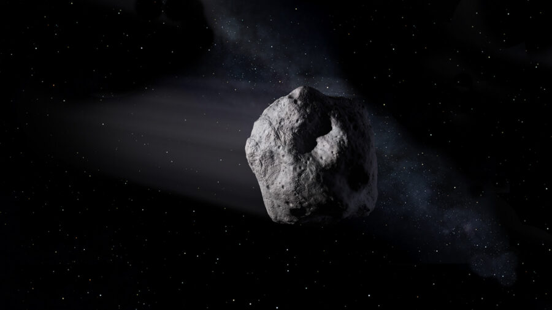
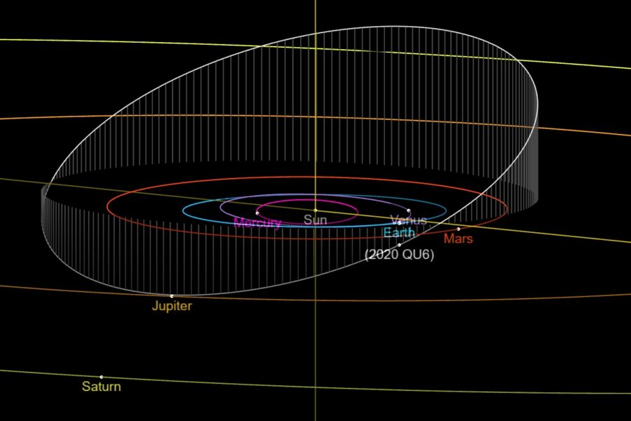
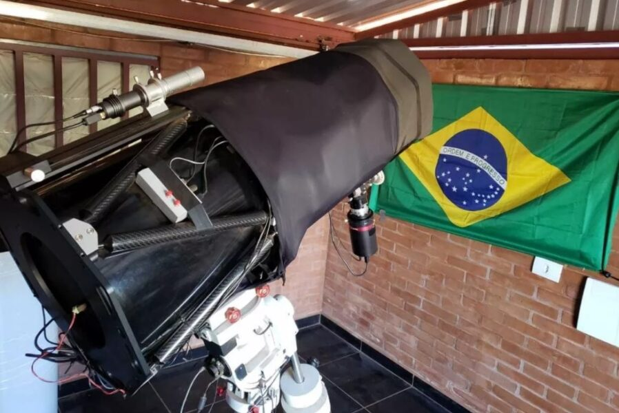
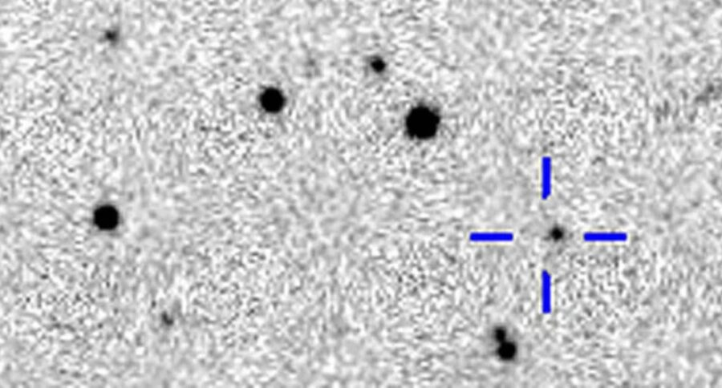
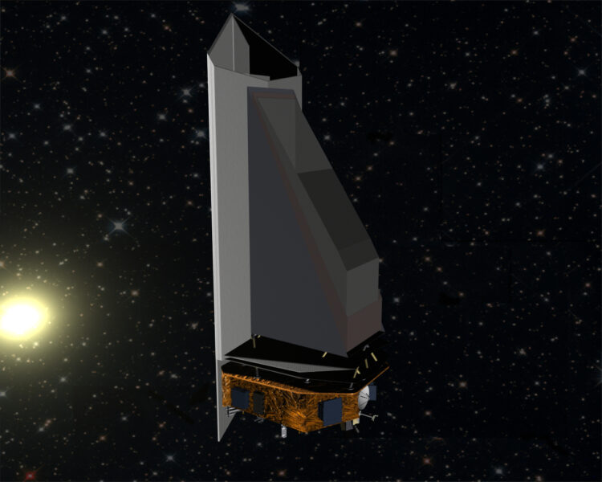

A grant from the Planetary Society enabled the recent discovery of
kilometer-sized asteroid 2020 QU6.

An artist's conception of a near-Earth asteroid.
NASA
We have not yet found all the large, potentially hazardous near-Earth
objects, as highlighted by the recent discovery of a kilometer-size
asteroid.
Amateur astronomer Leonardo Amaral was scanning the skies on the night
of August 27th, imaging a region in the constellation Indus, when he
picked up a cosmic interloper: the asteroid 2020 QU6.
Amaral used the 0.3-meter reflector at the Campo dos Amarais
observatory near Sau Paulo, Brazil. The observatory had received a
recent upgrade thanks to a Planetary Society grant.
Turns out, 2020 QU6 is about a kilometer across — a surprising find
given that most such large objects have been found and cataloged. The
asteroid orbits the Sun once every 3.26 years on an orbit inclined
23.5° relative to the ecliptic plane. It poses no current threat to
Earth, having passed within 40 million kilometers (24 million miles,
more than 100 times the Earth-Moon distance) on September 10th. That's
the closest the asteroid will come to Earth in the 21st century.

The orbit of 2020 QU6. NASA/JPL
PLANETARY SOCIETY GRANT
The discovery was made possible thanks to an $8,500 grant from the
Planetary Society's Shoemaker NEO Grant program, which encourages
advanced amateurs to hunt for new asteroids, as well as to track known
asteroids and refine their future paths.
The grant enabled Amaral and the Campo dos Amarais observatory to
upgrade to a more stable telescope mount, allowing for more precise
tracking over longer periods of time. Amaral’s Southern Hemisphere
vantage point also gave him an edge, as the southern sky is only
sparsely covered by automated surveys.

The telescope used for the discovery.
Leonardo Scanferla Amaral
NEAR-EARTH OBJECTS IN THE NEWS
Near-Earth asteroids have been in the news a lot recently: On August
15th, asteroid 2020 QG passed just 2,950 km from Earth's surface, the
closest a passing asteroid has come. Another asteroid, 2011 ES4 passed
1.48 million km from Earth on September 2nd and was recovered by the
PanSTARRS survey, allowing astronomer Gianluca Masi to track the
asteroid on September 6th.
“We hear more and more frequently about asteroid discoveries primarily
because we are getting better at finding and tracking near-Earth
asteroids,” says Bruce Betts (Planetary Society) in a recent press
release. “There aren’t suddenly more asteroids, we’re just getting
better at seeing them.”

The discovery image of asteroid 2020 QU6.
Leonardo Amaral
NASA'S MANDATE
Detecting hazardous space rocks in the inner solar system is of
paramount importance, should we ever have to move one out of the way.
In 1998, U.S. Congress asked NASA to identify 90% of near-Earth
asteroids that are 1 kilometer in size and larger. NASA has met that
goal, though Amaral's observations shows that there are still
discoveries to be made.
Collision with a kilometer-size asteroid would have disastrous effects
for the globe, but even smaller ones can cause regional damage. For
that reason, Congress expanded the criterion in 2005, asking that NASA
find near-Earth objects 140 meters and larger by 2020. We’re well
behind that goal, with only an estimated 40% of the population
discovered to date.
One NASA effort, the Near Earth Object Surveillance Mission (NEOSM,
formerly NEOCam) could meet that goal in a decade. If funded, NEOSM
would launch in the 2025 time-frame. NASA currently spends $160
million a year on planetary defense, less than 1% of its total annual
budget.

An artist's depiction of NEOSM in space.
NASA / JPL
“This discovery reminds us that even though we’ve found most large
NEOs, we haven’t found all of them,” says Casey Dreier (Planetary
Society) in a recent press release. “We must continue to support
ground-based astronomers and invest in new space-based capabilities
like NEOSM in order to protect Earth now and in the future.”
The discovery shows that large, undiscovered space rocks are still out
there — and that amateur observers can still make meaningful
contributions to find them.
Contact Information: